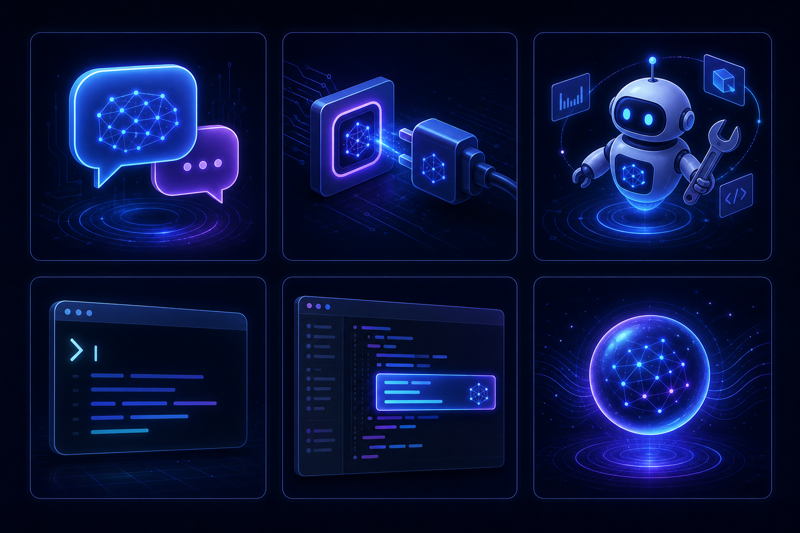
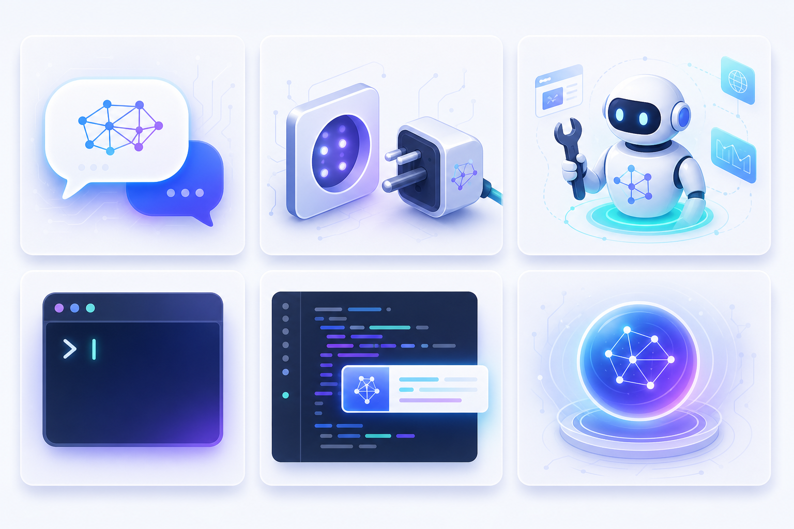

LLM 的基础应用方式LLM の基本的な活用方法Ways to Use LLMs
同一个模型，可以用六种很不一样的方式接入工作。控制力、自动化程度、上手难度各有取舍——先建立全景，再逐一上手。 同じモデルでも、6 つの異なる形で仕事に組み込めます。制御性・自動化・学習コストはそれぞれトレードオフ。まず全体像を、それから一つずつ。 The same model plugs into your work in six quite different ways. Each trades off control, autonomy, and learning curve. Get the panorama first, then try each.


网页版 ChatWeb 版 ChatWeb Chat
浏览器里直接对话。零门槛、最直观，适合问答、起草、头脑风暴；缺点是难以自动化、难接入系统。ブラウザで直接対話。ゼロ障壁で直感的。Q&A・下書き・ブレストに最適。自動化やシステム連携は苦手。Talk in the browser. Zero setup, most intuitive — great for Q&A, drafting, brainstorming. Hard to automate or wire into systems.
API 调用API 呼び出しAPI Calls
把模型当成一个可编程的服务：你发请求，它回结构化结果。可批量、可集成、可流式输出，是所有上层应用的地基。モデルをプログラム可能なサービスとして扱う：リクエストを送り、構造化結果を受け取る。バッチ・統合・ストリーミング対応で、上位アプリの土台。Treat the model as a programmable service: send a request, get a structured result. Batchable, integratable, streamable — the foundation of every higher-level app.
curl https://api.anthropic.com/v1/messages \
-H "x-api-key: $API_KEY" \
-H "anthropic-version: 2023-06-01" \
-H "content-type: application/json" \
-d '{
"model": "claude-…",
"max_tokens": 256,
"messages": [{"role":"user","content":"Explain RAG"}]
}'from anthropic import Anthropic
client = Anthropic()
msg = client.messages.create(
model="claude-…",
max_tokens=256,
messages=[{"role": "user", "content": "Explain RAG"}],
)
print(msg.content[0].text)import Anthropic from "@anthropic-ai/sdk";
const client = new Anthropic();
const msg = await client.messages.create({
model: "claude-…",
max_tokens: 256,
messages: [{ role: "user", content: "Explain RAG" }],
});
console.log(msg.content[0].text);// 点上方按钮查看模拟的流式 JSON 响应// 上のボタンで疑似ストリーミング応答を表示// Click above to see a simulated streaming JSON responseProvider 内置功能プロバイダ組込み機能Provider Built-in Tools
很多能力厂商已在 API/平台层「开箱即用」。关键区分：大多在服务端（厂商替你跑），而 computer use 属客户端执行——模型只负责决策，由你的程序/环境实际操作并回传结果。多くはプロバイダが API/プラットフォーム層で「すぐ使える」形で提供。要点：多くはサーバ側（プロバイダが代行）だが、computer use はクライアント実行——モデルは判断のみ、実操作と結果返却は自分の環境。Many capabilities ship "out of the box" at the provider layer. Key distinction: most run server-side (the provider runs them for you), but computer use is client-executed — the model only decides; your app/environment performs the actions and returns the result.
| 能力機能Capability | 在哪运行実行場所Runs where | 说明説明Notes |
|---|---|---|
web_search | 服务端サーバserver | 厂商代你联网检索，回答附来源。プロバイダが検索、出典付き。Provider searches the web, returns cited answers. |
code_execution | 服务端サーバserver | 厂商托管沙箱里跑代码/算数据。プロバイダ管理のサンドボックスで実行。Runs in the provider's hosted sandbox. |
| 文件检索 / retrievalファイル検索 / retrievalfile search / retrieval | 服务端サーバserver | 厂商托管检索 / 向量库。プロバイダ管理の検索 / ベクトル。Provider-hosted retrieval / vector store. |
| 结构化输出 / JSON構造化出力 / JSONstructured output / JSON | 服务端サーバserver | 解码期约束输出格式。デコード時に出力を制約。Constrained decoding enforces the schema. |
| 视觉 / 多模态視覚 / マルチモーダルvision / multimodal | 服务端サーバserver | 模型自带能力。モデル本体の能力。A built-in model capability. |
computer_use | 客户端执行クライアント実行client-executed | 模型给出动作（点按/截图），由你的机器/VM 执行并回传截图。モデルが動作（クリック/撮影）を指示、自分のマシン/VM が実行し画面を返す。Model emits actions (click/screenshot); your machine/VM executes them and returns screenshots. |
Agent 使用（框架 / SDK）Agent 活用（フレームワーク / SDK）Agents (Frameworks / SDKs)
让模型自己「思考 → 调用工具 → 观察结果 → 再思考」，循环若干步直到完成任务。这就是 ReAct 循环，也是各类 Agent 框架的核心。モデル自身が「思考 → ツール呼出 → 観察 → 再思考」を数ステップ繰り返してタスクを完遂。これが ReAct ループであり、各種 Agent フレームワークの核。Let the model loop: "think → call a tool → observe → think again," repeating until the task is done. This is the ReAct loop — the heart of agent frameworks.
框架类别（不绑定具体项目）：编排型（图/状态机）、多 agent「编队」、轻量 SDK。フレームワークの種類（特定製品に限らず）：オーケストレーション型（グラフ/状態機械）、マルチ agent「編隊」、軽量 SDK。Framework categories (not specific products): orchestration (graphs/state machines), multi-agent "fleets," lightweight SDKs.
CLI / 终端式 AgentCLI / ターミナル型 AgentCLI / Terminal Agent
在终端里运行的编码 agent：用自然语言下任务，它读文件、改代码、跑命令。终端原生、可脚本化、易接入 CI——这是一种通用形态（代表性如 Claude Code、Codex、Copilot CLI、OpenCode 等同类工具）。ターミナルで動くコーディング agent：自然語でタスクを渡すと、ファイルを読み・コードを直し・コマンドを実行。ターミナルネイティブで、スクリプト化・CI 連携が容易——汎用形態（代表例: Claude Code、Codex、Copilot CLI、OpenCode 等）。A coding agent that runs in the terminal: hand it a task in natural language and it reads files, edits code, runs commands. Terminal-native, scriptable, CI-friendly — a general form (e.g. Claude Code, Codex, Copilot CLI, OpenCode).
IDE / 开发工具集成IDE / 開発ツール統合IDE / Tooling Integration
把 AI 嵌入编辑器：三个层级——① 行内补全（灰色幽灵文本，Tab 接受）；② 侧边对话；③ 编辑器内 agent（多文件改动）。AI をエディタに組込む：3 レベル——① インライン補完（ゴーストテキスト、Tab で採用）；② サイドチャット；③ エディタ内 agent（複数ファイル編集）。AI inside the editor, at three levels: ① inline completion (ghost text, Tab to accept); ② side chat; ③ in-editor agent (multi-file edits).
新兴形态：持久化 / 自改进个人助手新型：常駐 / 自己改善する個人アシスタントNew Forms: Persistent / Self-Improving Assistants
2025–2026 出现的一类新应用：自托管、多通道（Slack/Discord/iMessage…）、长期记忆，甚至能「自己写技能」闭环自改进，自带钥匙（bring-your-own-key）。2025–2026 に登場した新類型：セルフホスト、マルチチャネル（Slack/Discord/iMessage…）、長期記憶、さらに「自分でスキルを書く」自己改善ループ、bring-your-own-key。A new class from 2025–2026: self-hosted, multi-channel (Slack/Discord/iMessage…), long-term memory, even closed-loop self-improvement that writes its own skills — bring-your-own-key.
OpenClaw
开源个人 AI 助手，自托管网关接入各种聊天应用，可自写技能、主动自动化、长期记忆。OSS の個人 AI アシスタント。セルフホストのゲートウェイで各種チャットに接続、スキル自作・能動的自動化・長期記憶。Open-source personal AI assistant; self-hosted gateway into chat apps, writes its own skills, proactive automation, long-term memory.
Hermes Agent
Nous Research 的自托管持久 agent，闭环学习（完成任务后写成可复用技能），接 200+ 模型。偏会话助手，非编码优先。Nous Research の常駐 agent。閉ループ学習（タスク後に再利用スキル化）、200+ モデル接続。会話寄りでコーディング特化ではない。Nous Research's persistent agent; closed learning loop (writes reusable skills after tasks), 200+ models. Conversational-first, not coding-first.
更广的新形态：多模型编排平台、声明式多 agent、agent 编队。より広い新形態：マルチモデル編成プラットフォーム、宣言的マルチ agent、agent 編隊。Wider new forms: multi-model orchestration platforms, declarative multi-agent, agent fleets.
六形态对比 & 如何选用6 形態の比較 & 使い分けSix Modes Compared & How to Choose
| 形态形態Mode | 控制力制御性Control | 自动化自動化Autonomy | 上手学習コストOnboarding | 持久性永続性Persistence | 适用用途Best for |
|---|---|---|---|---|---|
| Chat | 高 | 低 | 易 | 低 | 问答 / 起草Q&A / 下書きQ&A / drafting |
| API | 高 | 中 | 中 | 低 | 集成 / 批量統合 / バッチintegration / batch |
| Agent | 中 | 高 | 较难 | 中 | 多步任务多段タスクmulti-step tasks |
| CLI | 中 | 高 | 中 | 低 | 编码 / CIコーディング / CIcoding / CI |
| IDE | 高 | 中 | 易 | 低 | 日常编码日常コーディングeveryday coding |
| 持久助手常駐Persistent | 低 | 高 | 较难 | 高 | 个人自动化個人自動化personal automation |
embedded?"}:::q P -- "In my code" --> API["API + built-in tools"]:::a P -- "In my editor" --> IDE["IDE integration"]:::a P -- "Multi-step task" --> AG{"Where?"}:::q AG -- "Terminal / CI" --> CLI["CLI agent"]:::a AG -- "Custom flow" --> AGENT["Agent SDK"]:::a P -- "Always-on, personal" --> PER["Persistent assistant"]:::a classDef q stroke:#b07bff,stroke-width:2px; classDef a stroke:#5b8cff,stroke-width:2px;
前沿与最佳实践最前線とベストプラクティスFrontier & Best Practices
检索 / Agentic Search検索 / Agentic SearchRetrieval / Agentic Search
标准 RAG → 模块化 RAG（查询改写 + 混合检索 + 重排 reranking）→ Agentic Search / Agentic Retrieval（agent 做查询规划、拆解子查询、并行检索、按需迭代）→ GraphRAG → Contextual Retrieval。標準 RAG → モジュラー RAG（クエリ書換 + ハイブリッド検索 + リランキング）→ Agentic Search / Agentic Retrieval（agent がクエリ計画・サブクエリ分解・並列検索・反復）→ GraphRAG → Contextual Retrieval。Standard RAG → Modular RAG (query rewriting + hybrid search + reranking) → Agentic Search / Agentic Retrieval (the agent plans queries, decomposes sub-queries, searches in parallel, iterates on demand) → GraphRAG → Contextual Retrieval.
记忆与召回記憶と想起Memory & Recall
三层：短期（对话上下文）/ 长期（知识）/ 工作状态（事务）。召回不止向量库——向量(ANN) + 全文检索(FTS5/BM25) + 倒排索引 + 知识图谱/GraphDB(多跳) + LLM 生成的 wiki/摘要。2026 主流是混合检索（向量广度 + 图深度）。3 層：短期（対話文脈）/ 長期（知識）/ 作業状態（トランザクション）。想起はベクトル DB だけではない——ベクトル(ANN) + 全文検索(FTS5/BM25) + 転置インデックス + 知識グラフ/GraphDB(マルチホップ) + LLM 生成 wiki/要約。2026 の主流はハイブリッド検索。Three layers: short-term (conversation) / long-term (knowledge) / working state (transactional). Recall is more than a vector DB — vectors (ANN) + full-text search (FTS5/BM25) + inverted index + knowledge graph/GraphDB (multi-hop) + LLM-generated wiki/summaries. The 2026 norm is hybrid retrieval (vector breadth + graph depth).
模型路由モデルルーティングModel routing
按任务选模型，别让一个模型干所有；多模态（视频/语音/文本）；端侧小模型处理有界任务。タスク別にモデルを選ぶ。多モーダル（動画/音声/テキスト）、端末側の小型モデルで有界タスク。Route by task — don't make one model do everything; multimodal (video/voice/text); small on-device models for bounded jobs.
治理提醒ガバナンスGovernance
Gartner 警告：别把「改了名的 chatbot」当成真正的 agentic AI——可审计、可观测是底线。Gartner の警告：「名前を変えた chatbot」を agentic AI と誤認しない——監査可能性・可観測性が前提。Gartner warns: don't mistake a rebranded chatbot for true agentic AI — auditability and observability are the baseline.